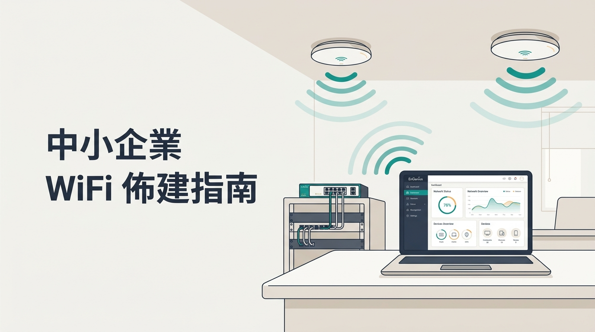

一塊共享白板(marketing-state.md)+ RACI 角色契約 + 檔案式 handoff + 顯式人類審批。全跑在 Claude Code,零額外 infra —— 被規模逼到了再升級 Hermes(常駐)/ Paperclip(治理)。已 dogfood 實證可行。
marketing-state.md 是全隊唯一協調狀態,沒寫進去的事不存在。兩者讀寫同一個 marketing-state.md,無痛升級。
| 模式 | 怎麼跑 | 何時用 |
|---|---|---|
| A · 手動 | 在 Claude Code 叫某職能 skill,讀 state → 做 → 寫回 | 驗證期(現在) |
| B · 自動迴圈 | shell 迴圈反覆呼叫 claude,orchestrator 派工(學 Auto-Company) | 要 24/7 時 |
每個 section 有唯一 owner;只有 owner 能寫該段,全體共用變更紀錄。
| 本週目標 | Owner:策略(需人類核可)— 北極星 + 重點 |
| 審批佇列 | 任何職能放入,只有人類可核可 — 等拍板的事 |
| 各職能 Next Action | 各自只寫自己那行 — 下一步 + 狀態 |
| 進行中 Handoffs | 收發雙方 — 交接索引 |
| 成效快照 | Analytics — 數據 + 洞察回饋 |
| 變更紀錄 | 全體 append-only — 時間 + 誰 + 做了什麼 |
handoffs/HO-YYYY-NNNN.md 一個檔。接收方掃「to=我、requested」;發起方掃「我發起、delivered」收下並 closed。審批佇列 是唯一「對外 / 花錢 / 定調」的出口:
[ ] (待核可);只有人類能改 [x] (已核可);職能只執行被核可的對外動作。直接對應 RACI 裡「人類 = A」的列(發布、花錢、定位定稿)。不是紙上談兵 —— 在 Claude Code 上實際跑過完整自我改進迴圈(EnGenius 情境,主題:WiFi 佈建指南 → 依數據迭代到 PoE)。

再跑一個週期,證明部門能依數據自我改進:Analytics 量測已發布內容 → 透過黑板把洞察回饋策略 → 策略據此調整下週目標(WiFi → 主打 PoE + 雙向內鏈),整段仍過人類核可。
| 單檔瓶頸 | 模式 B 多 agent 同時寫會撞 → 拆成 per-role 檔 + index |
| 無硬預算 / 細稽核 | 本版用 log 當窮人版 audit → 要 per-agent 預算上限 / 不可竄改稽核 / GUI 時升 Paperclip |
| 收斂風險 | 靠 skill 內「先做別空談」+ 人類看 log;漂掉就改本週目標拉回 |